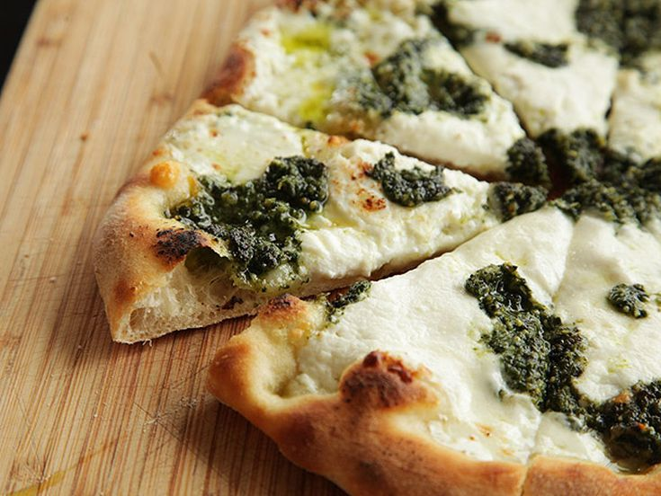

Pesto Pizza Recipe

Make your next night a pizza night
A great alternative to your regular old pizza
Ingredients
- 1 (12 inch) pre-baked pizza crust
- 1.2 cup pesto
<1i> 1 ripe tomato, chopped
- 1/2 cup green bell pepper, chopped
- 1 (2 ounce) can chopped black olived, drained
- 1/2 small red onion, chopped
- 1 (4 ounce) can artichoke hearts, drained and sliced
- 1 cup crumbled feta cheese
Steps
- Preheat oven to 450 degrees F.
- Spread peston on pizza crust. Top with tomatoes, bell peppers, olives, red oinions
artichoke hearts and feta cheese.
- Bake for 8 to 10 minutes, or until cheese is melted and browned